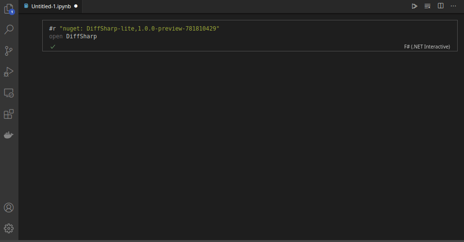

DiffSharp: Differentiable Tensor Programming Made Simple
DiffSharp is a tensor library with support for differentiable programming. It is designed for use in machine learning, probabilistic programming, optimization and other domains.
🗹 Nested and mixed-mode differentiation
🗹 Common optimizers, model elements, differentiable probability distributions
🗹 F# for robust functional programming
🗹 PyTorch familiar naming and idioms, efficient LibTorch C++ tensors
🗹 Linux, Windows, OSX and CUDA supported
🗹 Use notebooks in Jupyter and Visual Studio Code
🗹 100% open source
Differentiable Programming
DiffSharp provides world-leading automatic differentiation capabilities for tensor code, including composable gradients, Hessians, Jacobians, directional derivatives, and matrix-free Hessian- and Jacobian-vector products over arbitrary user code. This goes beyond conventional tensor libraries such as PyTorch and TensorFlow, allowing the use of nested forward and reverse differentiation up to any level.
With DiffSharp, you can compute higher-order derivatives efficiently and differentiate functions that are internally making use of differentiation and gradient-based optimization.

Practical, Familiar and Efficient
DiffSharp comes with a LibTorch backend, using the same C++ and CUDA implementations for tensor computations that power PyTorch. On top of these raw tensors (LibTorch's ATen, excluding autograd), DiffSharp implements its own computation graph and differentiation capabilities. It is tested on Linux and Windows and includes support for CUDA 11.
The DiffSharp API is designed to be similar to the PyTorch Python API through very similar naming and idioms, and where elements have similar names the PyTorch documentation can generally be used as a guide. There are some improvements and DiffSharp supports a richer gradient/differentiation API.
DiffSharp uses the incredible F# programming language for tensor programming. F# code is generally faster and more robust than equivalent Python code, while still being succinct and compact like Python, making it an ideal modern AI and machine learning implementation language. This allows fluent and productive code while focusing on the tensor programming domain.
Quick Usage Examples
You can execute this page as an interactive notebook running in your browser, or download it as a script or .NET Interactive Jupyter notebook, using the buttons 

 on the top of the page. This applies to all documentation pages.
on the top of the page. This applies to all documentation pages.
If using Visual Studio Code you can download, edit and execute these notebooks using the .NET Interactive Notebooks for VS Code.
First reference the package:
#r "nuget: DiffSharp-lite, 1.0.0-preview-1001211231"
or for LibTorch support:
#r "nuget: DiffSharp-cpu, 1.0.0-preview-1001211231"
open DiffSharp
Configure:
dsharp.config(dtype=Dtype.Float32, device=Device.CPU, backend=Backend.Reference)
Defining and adding two tensors:
let t1 = dsharp.tensor [ 0.0 .. 0.2 .. 1.0 ]
let t2 = dsharp.tensor [ 0, 1, 2, 4, 7, 2 ]
t1 + t2
Computing a convolution:
let t3 = dsharp.tensor [[[[0.0 .. 10.0]]]]
let t4 = dsharp.tensor [[[[0.0 ..0.1 .. 1.0]]]]
t3.conv2d(t4)
Take the gradient of a vector-to-scalar function:
let f (x: Tensor) = x.exp().sum()
dsharp.grad f (dsharp.tensor([1.8, 2.5]))
Define a model and optimize it:
open DiffSharp.Data
open DiffSharp.Model
open DiffSharp.Util
open DiffSharp.Optim
let epochs = 2
let batchSize = 32
let numBatches = 5
let trainSet = MNIST("../data", train=true, transform=id)
let trainLoader = trainSet.loader(batchSize=batchSize, shuffle=true)
let validSet = MNIST("../data", train=false, transform=id)
let validLoader = validSet.loader(batchSize=batchSize, shuffle=false)
let model = VAE(28*28, 20, [400])
let lr = dsharp.tensor(0.001)
let optimizer = Adam(model, lr=lr)
for epoch = 1 to epochs do
let batches = trainLoader.epoch(numBatches)
for i, x, _ in batches do
model.reverseDiff()
let l = model.loss(x)
l.reverse()
optimizer.step()
print $"Epoch: {epoch} minibatch: {i} loss: {l}"
let validLoss =
validLoader.epoch()
|> Seq.sumBy (fun (_, x, _) -> model.loss(x, normalize=false))
print $"Validation loss: {validLoss/validSet.length}"
Numerous other model definition and gradient/training patterns are supported, see examples.
More Information
DiffSharp is developed by Atılım Güneş Baydin, Don Syme and other contributors, having started as a project supervised by the automatic differentiation wizards Barak Pearlmutter and Jeffrey Siskind.
Please join us on GitHub!
static member abs : input:Tensor -> Tensor
static member acos : input:Tensor -> Tensor
static member add : a:Tensor * b:Tensor -> Tensor
static member arange : endVal:float * ?startVal:float * ?step:float * ?dtype:Dtype * ?device:Device * ?backend:Backend -> Tensor + 1 overload
static member arangeLike : input:Tensor * endVal:float * ?startVal:float * ?step:float * ?dtype:Dtype * ?device:Device * ?backend:Backend -> Tensor + 1 overload
static member argmax : input:Tensor -> int []
static member argmin : input:Tensor -> int []
static member asin : input:Tensor -> Tensor
static member atan : input:Tensor -> Tensor
static member bceLoss : input:Tensor * target:Tensor * ?weight:Tensor * ?reduction:string -> Tensor
...
static member dsharp.config : configuration:(Dtype * Device * Backend) -> unit
static member dsharp.config : ?dtype:Dtype * ?device:Device * ?backend:Backend -> unit
module Dtype
from DiffSharp
--------------------
[<Struct>]
type Dtype =
| BFloat16
| Float16
| Float32
| Float64
| Int8
| Byte
| Int16
| Int32
| Int64
| Bool
override ToString : unit -> string
member private Name : string
member SummationType : Dtype
union case Device.Device: DeviceType * int -> Device
--------------------
module Device
from DiffSharp
--------------------
[<Struct>]
type Device =
| Device of DeviceType * int
override ToString : unit -> string
member private Code : int
member DeviceIndex : int
member DeviceType : DeviceType
member private Name : string
static member CPU : Device
static member GPU : Device
module Backend
from DiffSharp
--------------------
type Backend =
| Reference
| Torch
| Other of name: string * code: int
override ToString : unit -> string
member private Code : int
member Name : string
private | TensorC of primalRaw: RawTensor
| TensorF of primal: Tensor * derivative: Tensor * nestingTag: uint32
| TensorR of primal: Tensor * derivative: Tensor ref * parentOp: TensorOp * fanout: uint32 ref * nestingTag: uint32
interface IConvertible
interface IComparable
override Equals : other:obj -> bool
override GetHashCode : unit -> int
member private GetSlice : bounds:int [,] -> Tensor
override ToString : unit -> string
member abs : unit -> Tensor
member acos : unit -> Tensor
member add : b:Tensor -> Tensor + 1 overload
member addSlice : location:seq<int> * b:Tensor -> Tensor
...
type MNIST =
inherit Dataset
new : path:string * ?urls:seq<string> * ?train:bool * ?transform:(Tensor -> Tensor) * ?targetTransform:(Tensor -> Tensor) -> MNIST
override item : i:int -> Tensor * Tensor
member classNames : string []
member classes : int
override length : int
--------------------
new : path:string * ?urls:seq<string> * ?train:bool * ?transform:(Tensor -> Tensor) * ?targetTransform:(Tensor -> Tensor) -> MNIST
type VAE =
inherit Model
new : xDim:int * zDim:int * ?hDims:seq<int> * ?nonlinearity:(Tensor -> Tensor) * ?nonlinearityLast:(Tensor -> Tensor) -> VAE
member encodeDecode : x:Tensor -> Tensor * Tensor * Tensor
override forward : x:Tensor -> Tensor
override getString : unit -> string
member sample : ?numSamples:int -> Tensor
static member loss : xRecon:Tensor * x:Tensor * mu:Tensor * logVar:Tensor -> Tensor + 1 overload
--------------------
new : xDim:int * zDim:int * ?hDims:seq<int> * ?nonlinearity:(Tensor -> Tensor) * ?nonlinearityLast:(Tensor -> Tensor) -> VAE
type Adam =
inherit Optimizer
new : model:Model * ?lr:Tensor * ?beta1:Tensor * ?beta2:Tensor * ?eps:Tensor * ?weightDecay:Tensor * ?reversible:bool -> Adam
override updateRule : name:string -> t:Tensor -> Tensor
--------------------
new : model:Model * ?lr:Tensor * ?beta1:Tensor * ?beta2:Tensor * ?eps:Tensor * ?weightDecay:Tensor * ?reversible:bool -> Adam
module Seq
from DiffSharp.Util
--------------------
module Seq
from Microsoft.FSharp.Collections
© Copyright 2021, DiffSharp Contributors.